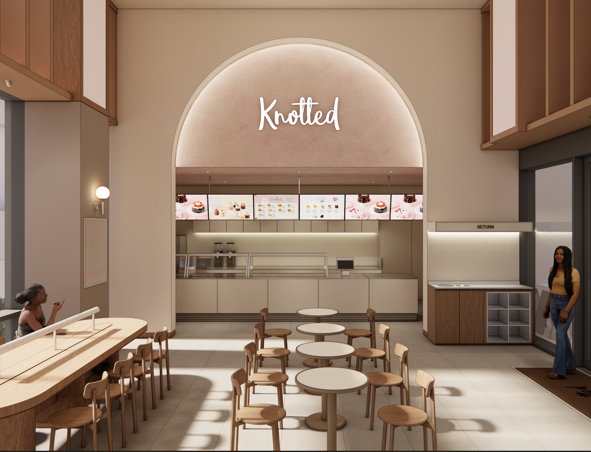
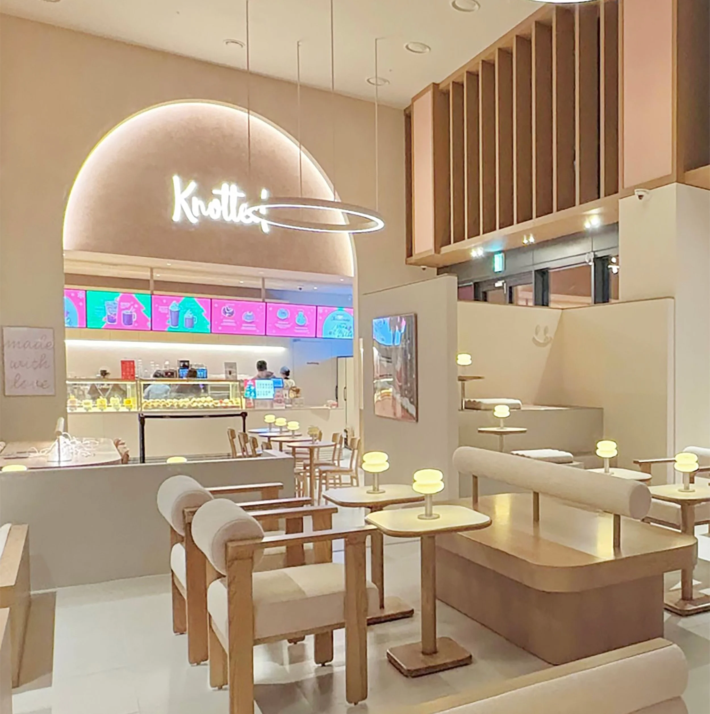
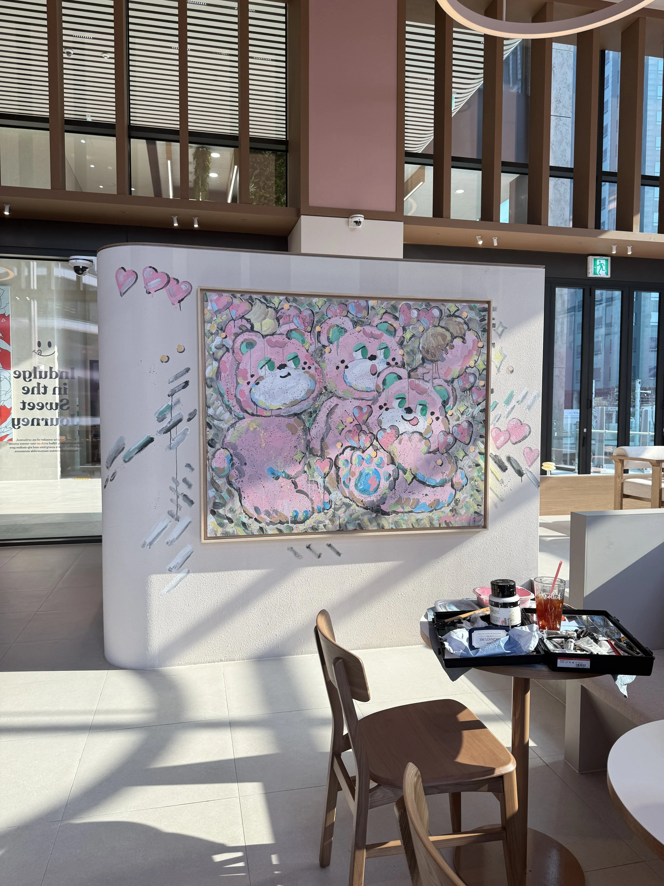
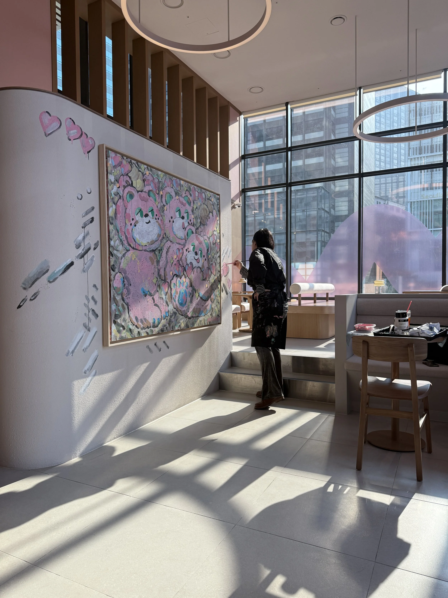
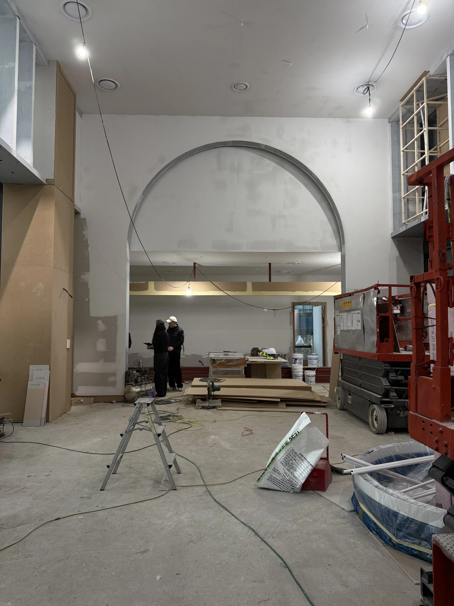
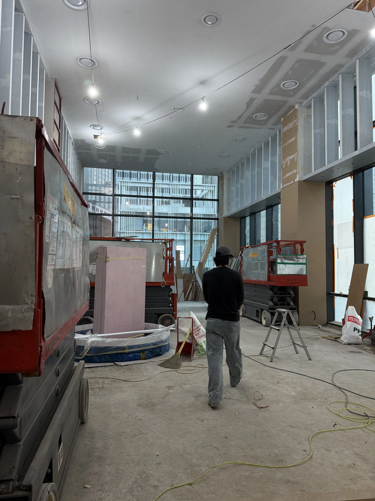
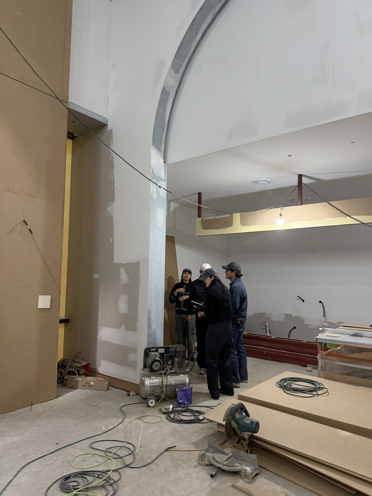
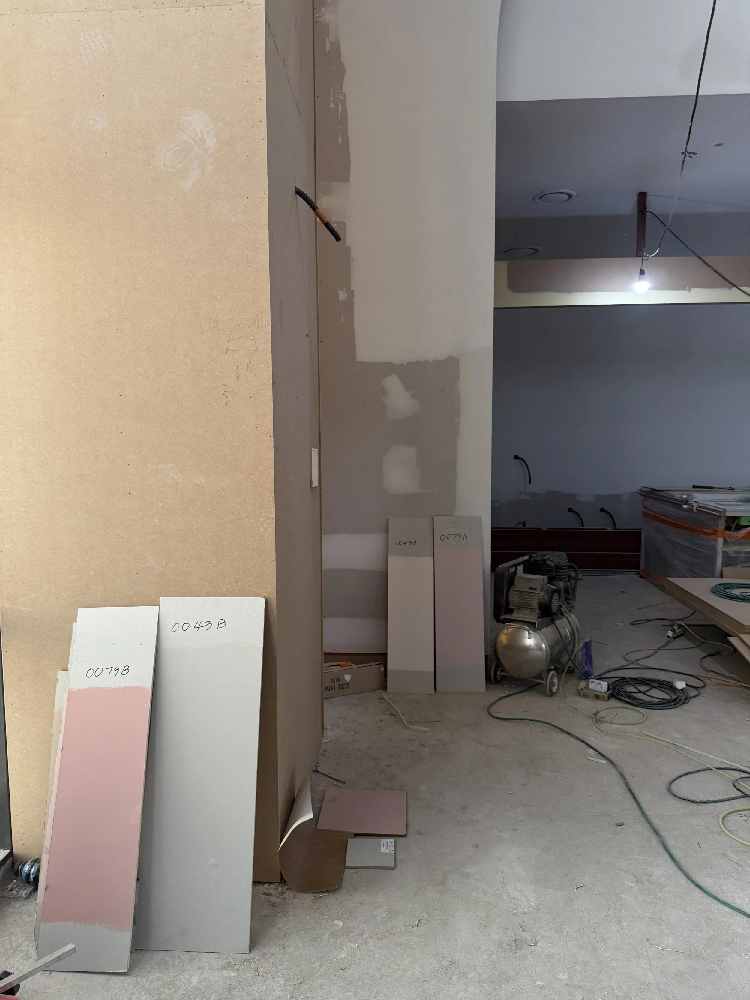
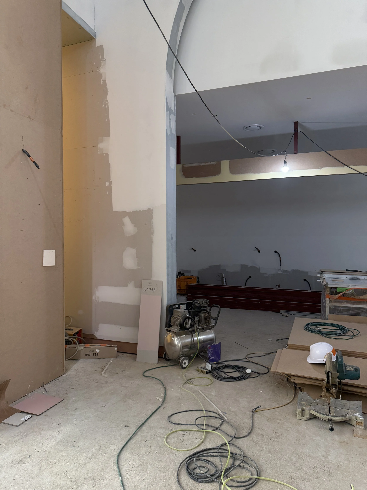

Knotted Seoullo
A quieter Knotted, tuned for a transit-adjacent site that gets both commuters and travellers.

- Client
- GFFG
- Location
- Seoul Station, Seoul
- Year
- 2024
- Role
- Creative Director
- Scope
- Creative direction, interior concept, lighting and furniture selection
Sited near Seoul Station, this store serves a mix of regulars and people passing through once. The interior runs cosier and more minimal than the flagship language — soft neutral tones, warm lighting, wood furnishings — so it works as a place to sit down as well as a place to photograph.
The result balances the brand’s playful aesthetic against an atmosphere calm enough to hold someone for an hour.








